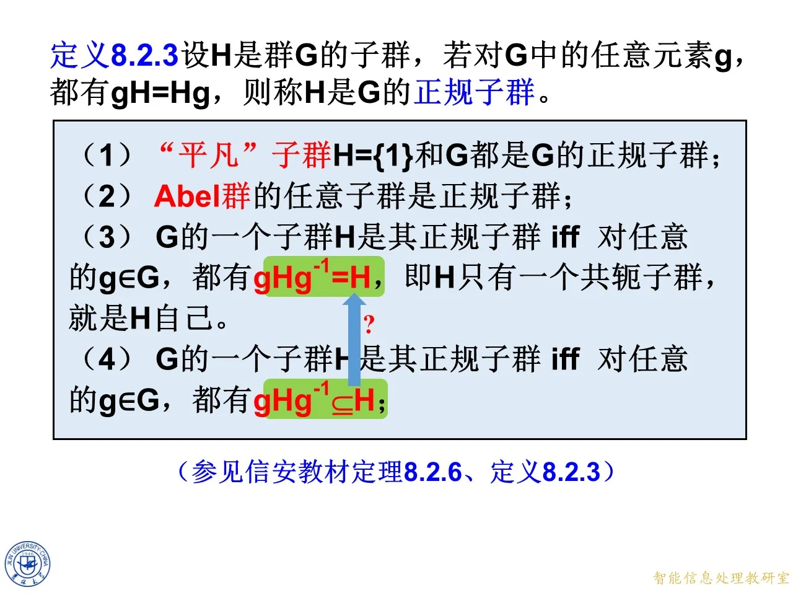
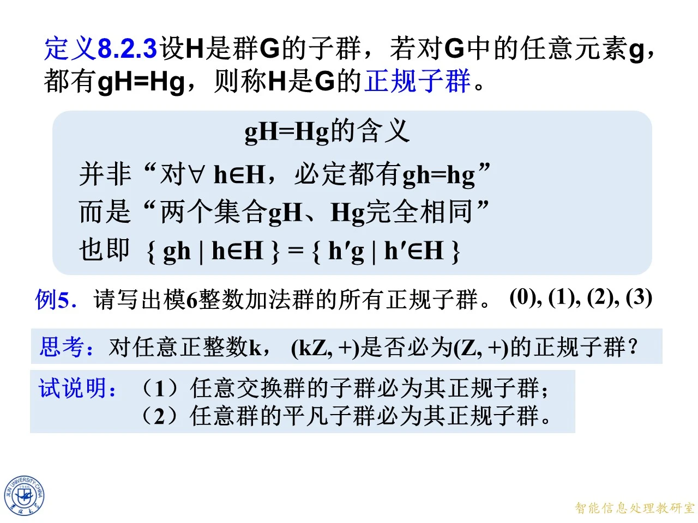
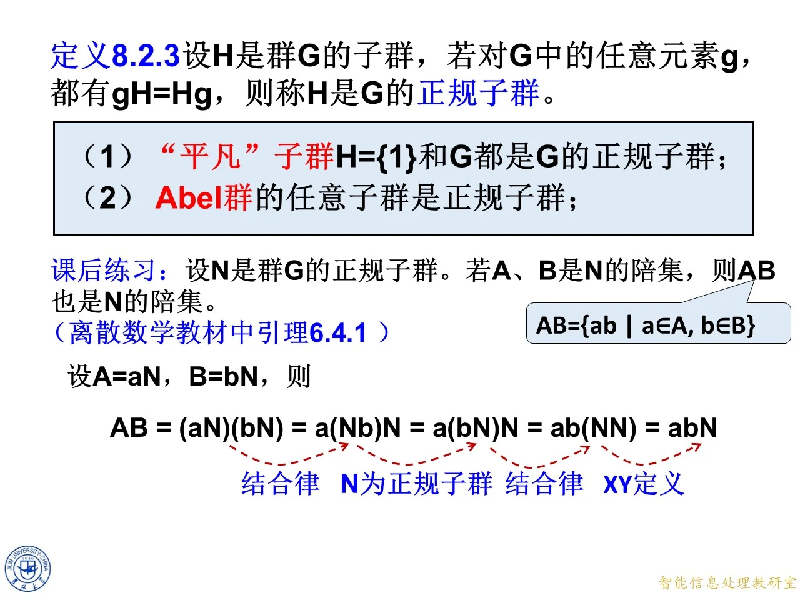

本主题在陪集概念之后介绍正规子群。上一节已经知道，子群 H 的左陪集与右陪集一般不相同，本节刻画两者永远相同的特殊子群——正规子群，给出它的定义（定义 8.2.3）、若干等价刻画和必须掌握的例子，最后通过一道课后练习说明正规性如何保证两个陪集的乘积仍是陪集，为后面学习商群做准备。课件把定义、例子与四条等价刻画放在同一组逐步展开的幻灯片里，下面按内容分小节讲解。
定义 8.2.3：正规子群
◆ p.484-487 ｜定义 8.2.3 与 g H = H g gH=Hg g H = H g
定义 8.2.3：设 H H H G G G G G G g g g g H = H g gH = Hg g H = H g H H H G G G
课件特意强调 g H = H g gH = Hg g H = H g h ∈ H h \in H h ∈ H g h = h g g h = h g g h = h g g H gH g H H g Hg H g { g h ∣ h ∈ H } = { h ′ g ∣ h ′ ∈ H } \{g h \mid h \in H\} = \{h' g \mid h' \in H\} { g h ∣ h ∈ H } = { h ′ g ∣ h ′ ∈ H } h ∈ H h \in H h ∈ H h h h h ′ ∈ H h' \in H h ′ ∈ H g h = h ′ g g h = h' g g h = h ′ g h ′ h' h ′ g g g h h h
页面上还引出例 5（见下一小节）。理解定义时注意：g H gH g H g g g H H H H g Hg H g e e e g = g e ∈ g H g = g e \in gH g = g e ∈ g H g g g

课件原图 · 第八章-5-原版（合并来源第 509 页 / 本份第 189 页） · 第 509 页 查看前后已收录原页 → 例 5：模 6 整数加法群的所有正规子群
◆ p.488-491 ｜例 5、思考与试说明
例 5：请写出模 6 整数加法群的所有正规子群。课件给的答案是 ( 0 ) , ( 1 ) , ( 2 ) , ( 3 ) (0), (1), (2), (3) ( 0 ) , ( 1 ) , ( 2 ) , ( 3 ) ( k ) (k) ( k ) k k k { 0 , k , 2 k , … } ( m o d 6 ) \{0, k, 2k, \ldots\} \pmod 6 { 0 , k , 2 k , … } ( mod 6 )
模 6 加法群 Z 6 = { 0 , 1 , 2 , 3 , 4 , 5 } Z_6 = \{0,1,2,3,4,5\} Z 6 = { 0 , 1 , 2 , 3 , 4 , 5 } { 0 } = ( 0 ) \{0\} = (0) { 0 } = ( 0 ) { 0 , 3 } = ( 3 ) \{0,3\} = (3) { 0 , 3 } = ( 3 ) { 0 , 2 , 4 } = ( 2 ) \{0,2,4\} = (2) { 0 , 2 , 4 } = ( 2 ) { 0 , 1 , 2 , 3 , 4 , 5 } = ( 1 ) \{0,1,2,3,4,5\} = (1) { 0 , 1 , 2 , 3 , 4 , 5 } = ( 1 ) Z 6 Z_6 Z 6 g + H g + H g + H H + g H + g H + g { g + h ∣ h ∈ H } \{g + h \mid h \in H\} { g + h ∣ h ∈ H } ( 0 ) , ( 1 ) , ( 2 ) , ( 3 ) (0), (1), (2), (3) ( 0 ) , ( 1 ) , ( 2 ) , ( 3 )
课件随后给出思考与试说明两道题。
思考：对任意正整数 k k k ( k Z , + ) (k\mathbb{Z}, +) ( k Z , + ) ( Z , + ) (\mathbb{Z}, +) ( Z , + ) k Z = { … , − 2 k , − k , 0 , k , 2 k , … } k\mathbb{Z} = \{\ldots, -2k, -k, 0, k, 2k, \ldots\} k Z = { … , − 2 k , − k , 0 , k , 2 k , … } k k k k k k − m k -mk − mk m k mk mk Z \mathbb{Z} Z
试说明 (1)：任意交换群的子群必为其正规子群。设 G G G H H H g ∈ G g \in G g ∈ G h ∈ H h \in H h ∈ H g h = h g g h = h g g h = h g g H = { g h ∣ h ∈ H } = { h g ∣ h ∈ H } = H g gH = \{g h \mid h \in H\} = \{h g \mid h \in H\} = Hg g H = { g h ∣ h ∈ H } = { h g ∣ h ∈ H } = H g
试说明 (2)：任意群的平凡子群必为其正规子群。平凡子群指 H = { e } H = \{e\} H = { e } H = G H = G H = G H = { e } H = \{e\} H = { e } g { e } = { g } = { e } g g\{e\} = \{g\} = \{e\} g g { e } = { g } = { e } g { g } \{g\} { g } H = G H = G H = G g G = G = G g g G = G = G g g G = G = G g g g g G G G G G G y ∈ G y \in G y ∈ G g ( g − 1 y ) g (g^{-1} y) g ( g − 1 y ) g − 1 y ∈ G g^{-1} y \in G g − 1 y ∈ G
拓展 （课件外补充）：判断"哪个子群不正规"需要非交换群。在 S 3 S_3 S 3 H = { e , ( 1 2 3 ) , ( 1 3 2 ) } H = \{e, (1\,2\,3), (1\,3\,2)\} H = { e , ( 1 2 3 ) , ( 1 3 2 )} g g g g h g − 1 g h g^{-1} g h g − 1 g H g − 1 = H g H g^{-1} = H g H g − 1 = H H H H ( 1 2 3 ) ∘ ( 1 2 ) = ( 1 3 ) (1\,2\,3)\circ(1\,2) = (1\,3) ( 1 2 3 ) ∘ ( 1 2 ) = ( 1 3 ) ( 1 2 ) ∘ ( 1 2 3 ) = ( 2 3 ) (1\,2)\circ(1\,2\,3) = (2\,3) ( 1 2 ) ∘ ( 1 2 3 ) = ( 2 3 ) H H H K = { e , ( 1 2 ) } K = \{e, (1\,2)\} K = { e , ( 1 2 )} g = ( 1 2 3 ) g = (1\,2\,3) g = ( 1 2 3 ) g ( 1 2 ) g − 1 = ( 2 3 ) ∉ K g (1\,2) g^{-1} = (2\,3) \notin K g ( 1 2 ) g − 1 = ( 2 3 ) ∈ / K

课件原图 · 第八章-5-原版（合并来源第 491 页 / 本份第 171 页） · 第 491 页 查看前后已收录原页 → 正规子群的四条等价刻画
◆ p.492-494 ｜第 (1)(2) 条与课后练习
课件接着列出关于正规子群的一串事实。
(1) "平凡"子群 H = { 1 } H = \{1\} H = { 1 } G G G G G G
(2) Abel 群（交换群）的任意子群是正规子群（证明即试说明 (1)）。
课后练习（离散数学教材中引理 6.4.1）：设 N N N G G G A A A B B B N N N A B AB A B N N N A B = { a b ∣ a ∈ A , b ∈ B } AB = \{a b \mid a \in A, b \in B\} A B = { ab ∣ a ∈ A , b ∈ B }
证明：设 A = a N A = aN A = a N B = b N B = bN B = b N A B = ( a N ) ( b N ) = a ( N b ) N = a ( b N ) N = a b ( N N ) = a b N AB = (aN)(bN) = a(Nb)N = a(bN)N = ab(NN) = abN A B = ( a N ) ( b N ) = a ( N b ) N = a ( b N ) N = ab ( NN ) = ab N ( a N ) ( b N ) = a ( N b ) N (aN)(bN) = a(Nb)N ( a N ) ( b N ) = a ( N b ) N N b = b N Nb = bN N b = b N N N N g = b g = b g = b a ( b N ) N = a b ( N N ) a(bN)N = ab(NN) a ( b N ) N = ab ( NN ) N N = N NN = N NN = N N N N N N ⊆ N NN \subseteq N NN ⊆ N n ∈ N n \in N n ∈ N n = n e n = n e n = n e n ∈ N n \in N n ∈ N e ∈ N e \in N e ∈ N N ⊆ N N N \subseteq NN N ⊆ NN A B AB A B a b ab ab a b N abN ab N
拓展 （课件外补充）：也可以逐元素双向验证集合相等：任取 x = a n 1 ∈ A x = a n_1 \in A x = a n 1 ∈ A y = b n 2 ∈ B y = b n_2 \in B y = b n 2 ∈ B x y = a n 1 b n 2 = a b ( b − 1 n 1 b ) n 2 x y = a n_1 b n_2 = a b (b^{-1} n_1 b) n_2 x y = a n 1 b n 2 = ab ( b − 1 n 1 b ) n 2 b − 1 n 1 b ∈ N b^{-1} n_1 b \in N b − 1 n 1 b ∈ N x y ∈ a b N x y \in abN x y ∈ ab N a b n = a e ⋅ b n ∈ A B a b n = a e \cdot b n \in AB abn = a e ⋅ bn ∈ A B e ∈ N e \in N e ∈ N n 1 n_1 n 1 b b b b b − 1 b b^{-1} b b − 1
◆ p.495-498 ｜第 (3)(4) 条刻画
(3) G G G H H H g ∈ G g \in G g ∈ G g H g − 1 = H g H g^{-1} = H g H g − 1 = H H H H H H H
证明：若 H H H g H = H g gH = Hg g H = H g g − 1 g^{-1} g − 1 g H g − 1 = H g g − 1 = H gH g^{-1} = Hg g^{-1} = H g H g − 1 = H g g − 1 = H g g − 1 = e g g^{-1} = e g g − 1 = e H e = H H e = H He = H g g g g H g − 1 = H g H g^{-1} = H g H g − 1 = H g g g g H = H g gH = Hg g H = H g H H H g H g − 1 g H g^{-1} g H g − 1 H H H g g g g g g H H H
(4) G G G H H H g ∈ G g \in G g ∈ G g H g − 1 ⊆ H g H g^{-1} \subseteq H g H g − 1 ⊆ H
注意 (4) 把 (3) 中的等号减弱成了包含号，结论却不变，这正是课件接下来用几页动画逐步证明的、最容易出错的一条。
◆ p.499-505 ｜由单向包含推出等式
要证：若对任意 g ∈ G g \in G g ∈ G g H g − 1 ⊆ H g H g^{-1} \subseteq H g H g − 1 ⊆ H g H g − 1 = H g H g^{-1} = H g H g − 1 = H H H H
证明思路是对任意固定的 g g g g − 1 g^{-1} g − 1 g ∈ G g \in G g ∈ G g − 1 ∈ G g^{-1} \in G g − 1 ∈ G g − 1 H ( g − 1 ) − 1 ⊆ H g^{-1} H (g^{-1})^{-1} \subseteq H g − 1 H ( g − 1 ) − 1 ⊆ H g − 1 H g ⊆ H g^{-1} H g \subseteq H g − 1 H g ⊆ H ( g − 1 ) − 1 = g (g^{-1})^{-1} = g ( g − 1 ) − 1 = g g g g g − 1 g^{-1} g − 1 g ( g − 1 H g ) g − 1 ⊆ g H g − 1 g (g^{-1} H g) g^{-1} \subseteq g H g^{-1} g ( g − 1 H g ) g − 1 ⊆ g H g − 1 ( g g − 1 ) H ( g g − 1 ) = H (g g^{-1}) H (g g^{-1}) = H ( g g − 1 ) H ( g g − 1 ) = H H ⊆ g H g − 1 H \subseteq g H g^{-1} H ⊆ g H g − 1 g H g − 1 ⊆ H g H g^{-1} \subseteq H g H g − 1 ⊆ H g H g − 1 = H g H g^{-1} = H g H g − 1 = H
这里的关键是条件必须对所有 g g g g g g g H g − 1 ⊆ H gHg^{-1} \subseteq H g H g − 1 ⊆ H g − 1 g^{-1} g − 1 g ∈ G g \in G g ∈ G g − 1 ∈ G g^{-1} \in G g − 1 ∈ G g − 1 H ( g − 1 ) − 1 ⊆ H g^{-1} H (g^{-1})^{-1} \subseteq H g − 1 H ( g − 1 ) − 1 ⊆ H ⊆ \subseteq ⊆ H ⊆ g H g − 1 H \subseteq g H g^{-1} H ⊆ g H g − 1
拓展 （课件外补充）：两个容易犯的错误值得记下。其一，若只知道对某一个固定的 g g g g H g − 1 ⊆ H gHg^{-1} \subseteq H g H g − 1 ⊆ H g g g g − 1 g^{-1} g − 1 H H H g H g − 1 gHg^{-1} g H g − 1 H H H g h g − 1 ∈ H g h g^{-1} \in H g h g − 1 ∈ H g g g g ∈ G g \in G g ∈ G
◆ p.506-508 ｜证明的收尾
课件最后几帧把上面的推导完整摆出：对任意 g ∈ G g \in G g ∈ G g − 1 ∈ G g^{-1} \in G g − 1 ∈ G g − 1 H ( g − 1 ) − 1 ⊆ H g^{-1} H (g^{-1})^{-1} \subseteq H g − 1 H ( g − 1 ) − 1 ⊆ H g − 1 H g ⊆ H g^{-1} H g \subseteq H g − 1 H g ⊆ H g − 1 H g ⊆ H g^{-1} H g \subseteq H g − 1 H g ⊆ H g − 1 H ⊆ H g − 1 g^{-1} H \subseteq H g^{-1} g − 1 H ⊆ H g − 1 H ⊆ g H g − 1 H \subseteq g H g^{-1} H ⊆ g H g − 1 g − 1 g^{-1} g − 1 g − 1 g^{-1} g − 1 g g − 1 = e g g^{-1} = e g g − 1 = e g g g g H g − 1 = H g H g^{-1} = H g H g − 1 = H g g g
◆ p.509 ｜出处注记
本页只有一行出处说明：参见信安教材定理 8.2.6、定义 8.2.3。它标注本组刻画对应的教材位置，无新内容，并入本小节。
拓展 （课件外补充）：实际做题时判断正规性的常用顺序是：先看群是否交换（交换则全正规），再看是否平凡子群，然后检验 g h g − 1 ∈ H g h g^{-1} \in H g h g − 1 ∈ H g g g ( a N ) ( b N ) = a b N (aN)(bN) = abN ( a N ) ( b N ) = ab N

课件原图 · 第八章-5-原版（合并来源第 494 页 / 本份第 174 页） · 第 494 页 查看前后已收录原页 →